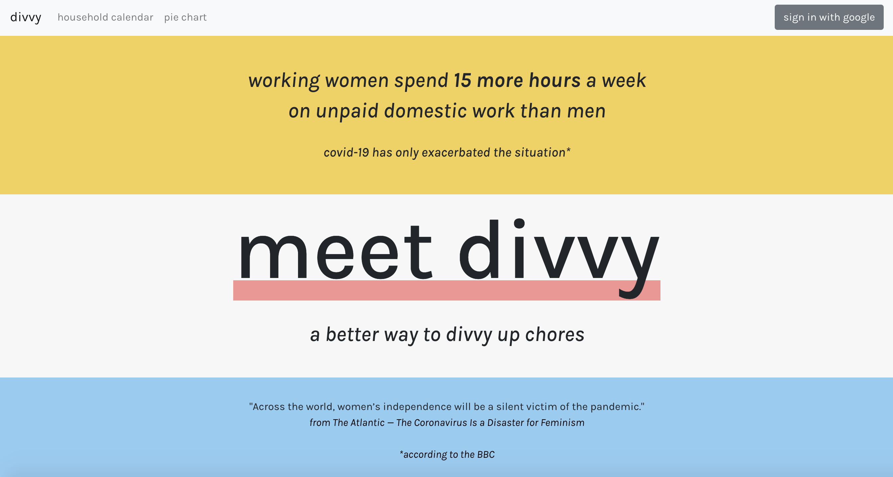
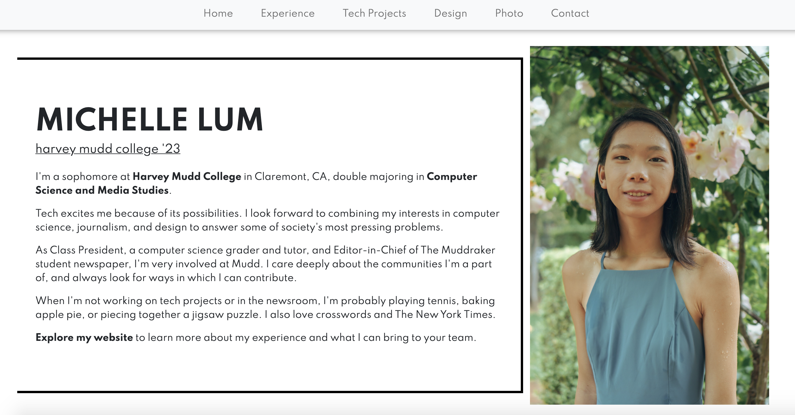
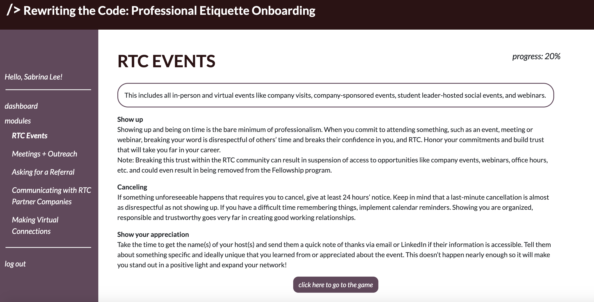
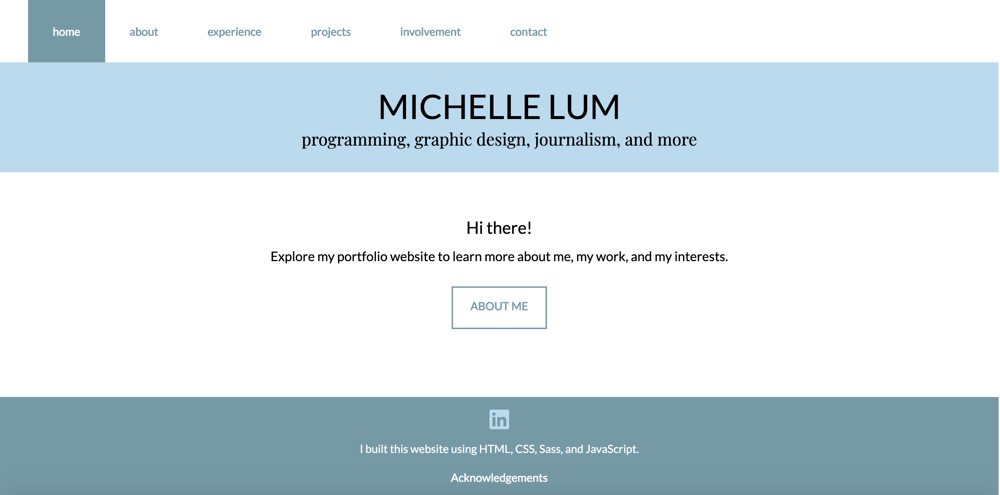

TECH PROJECTS
NYT Reader-Sourced Reporting Dashboard
(June - Aug. 2023)

NYT Reader-Sourced Reporting Dashboard (June - Aug. 2023)
- Attribute is The New York Times' internal tool for reader-sourced reporting. With Attribute, reporters and editors can publish callouts to collect stories, photos, and thoughts from readers. These submissions are often used to find interview sources.
- During my internship on the Interactive News team at The New York Times, I worked in an embedded role on the Attribute subteam.
- In this role, I created a map-based dashboard of reader responses, to help reporters and editors discover more geographically diverse sources.
- Reporters and editors can zoom in and out to view submissions at varying levels of granularity, and click into individual submissions.
- I used the Google Places API to infer location data from write-in responses, as well as the Mapbox API to create the end visual.
- Read the Travel article that the callout in the demo video inspired here.
- Technologies: React, TypeScript, CSS, MongoDB, Google Places API, Mapbox API
Task Monster
(Jan. - May 2022)

Task Monster (Jan. - May 2022)
- Try out the app at https://michelleklum.github.io/cs124-lab3/!
- Collaborated with another student to build a task manager web app using React frontend and Firebase backend
- Web app allows sign in via email or Google, saves user info to the cloud, live syncs to multiple devices, and is accessible (screenreader-friendly and navigable via keyboard) as well as responsive (usable on devices of all sizes)
- Users can create to-do lists; mark tasks as completed; sort tasks by priority, deadline, name, creation time, and modification time; and share to-do lists with other users
- Followed human-centered design process by conducting 5 rounds of user testing and making iterative improvements
- Added Firebase security rules to prevent users from accessing unauthorized data
- Put safeguards in place to ensure users do not accidentally delete tasks or lists
- Technologies: React, JavaScript, CSS, Firebase
Cinematic Feature Labeling
(March - April 2022)

Cinematic Feature Labeling (March - April 2022)

- Evaluated classical methods for automating expansion of the Gaze Data for the Analysis of Attention in Feature Films, a dataset containing 15 film clips annotated frame-by-frame for features such as faces and cuts, as well as eye-tracking data for 21 humans viewing those clips
- Used Haar cascades for head detection and localization, optimizing performance with multiple cascades
- Applied Lucas-Kanade optical flow to cut detection, analyzing how such a cut detection system is affected by genre, camerawork, and action internal to individual shots
- Wrote a 7-page research paper on my findings
- Technologies: Python, OpenCV, Matplotlib, Jupyter Notebook
Analysis of Gender Bias in Film
(Nov. - Dec. 2021)

Analysis of Gender Bias in Film (Nov. - Dec. 2021)


- Worked in a team of 3 to use natural language processing (NLP) techniques to study gender bias in film dialogue from the Cornell Movie-Dialogs Corpus
- Investigated how characters in film speak about other characters by analyzing the verbs that follow "he" and "she" pronouns in film dialogue
- Tracked how the prevalence of those verbs changed over time, focusing on films released between 1930 and 2009
- Built a classifier to determine whether there are differentiating characteristics between sentences that use "he" and sentences that use "she"
- Wrote a 6-page research paper on our findings
- Technologies: Python, pandas, Natural Language Toolkit (NLTK), SciPy, scikit-learn, Jupyter Notebook
Anyone Can Draw
(April - May 2021)

Anyone Can Draw (April - May 2021)
- Created a Flask web app to convert photos to art
- Used OpenCV to convert a single photo to an oil painting, watercolor, or pencil sketch
- Pointillized and posterized photos using k-means clustering with scikit-learn
- Performed style transfer — where you take in a content image and a style image and produce an image with the content of the content image but in the style of the style image — using TensorFlow Hub; also experimented with neural style transfer
- Built app with Flask Python web development framework, and deployed app via Heroku
- Technologies: Python, Flask, HTML, CSS, OpenCV, scikit-learn, NumPy, Pillow, Matplotlib, TensorFlow, Heroku
Sustainably Yours - HackMerced
(March 2021)

Sustainably Yours - HackMerced 1st Place Social Good (March 2021)
- Check out this project on Devpost!
- Set up an online marketplace for secondhand clothes, as an alternative to fast fashion
- Built full-stack web app using MongoDB, Express, React, and Node.js; handled user authentication using JSON Web Tokens
- Integrated app with Twilio SMS API and Gmail API through OAuth 2.0 authentication so users can contact sellers by sending emails and texts straight from the web app
- Won 1st Place for Social Good out of 400+ participants and 40+ projects at HackMerced VI
- Also won Best Design
- Technologies: MERN Stack — backend: MongoDB Atlas running on Google Cloud, Mongoose, Express; frontend: React, Redux for state management, Reactstrap to integrate Bootstrap components with React, CSS; Node.js environment; JSON Web Tokens (JWT) for authentication; JavaScript, Gmail API, Twilio SMS API
Simply Connect - SF Hacks
(March 2021)

Simply Connect - SF Hacks (March 2021)
- Check out this project on Devpost!
- Created a one-stop communications hub using React and Express, simplifying virtual communications by integrating web app with many digital platforms
- Sign in through Google OAuth 2.0 authentication
- See and search Google Contacts using Google People API
- Read and respond to emails using Gmail API
- View upcoming Zoom and Google Meet meetings via Google Calendar API
- Send texts to any phone number via Twilio SMS API connected to an Express backend
- Read and respond to GroupMe group chats through GroupMe API
- Technologies: React (frontend), Express (backend), JavaScript, Reactstrap to integrate Bootstrap components with React, CSS, Google People API, Gmail API, Google Calendar API, Twilio SMS API, GroupMe API
Divvy - Pearl Hacks
(Feb. 2021)

Divvy - Pearl Hacks 2nd Place Overall (February 2021)
- Check out this project on Devpost!
- Developed a React web app to divvy up household tasks more equitably so women aren't doing it all
- Connected to Google Calendar API by having users sign into Google with OAuth 2.0
- Allowed users to create and update a weekly household Google Calendar of tasks, which household members are responsible, and when they will be done
- Designed charts to display distribution of tasks — if someone is doing more than their fair share, Divvy will alert users, enabling them to re-delegate tasks more evenly
- Placed 2nd Overall out of 500+ participants and 70 projects at UNC Chapel Hill Pearl Hacks 2021
- Also won Best Working from Home Empowerment Hack, sponsored by Red Ventures
- Technologies: React (frontend), JavaScript, Reactstrap to integrate Bootstrap components with React, CSS, Google Calendar API
Coronavirus Chatbot
(Jan. 2021)

Coronavirus Chatbot (Jan. 2021)
- Developed a coronavirus chatbot to answer questions about coronavirus
- Used TensorFlow.js Universal Sentence Encoder to find the chatbot response that best matches user input
- Connected React frontend to the Covid Tracking Project API to obtain realtime statistics about coronavirus case counts, hospitalizations, and ICU status in U.S. states
- Made web app reponsive for accessibility
- Technologies: React, JavaScript, Reactstrap to integrate Bootstrap components with React, CSS, Fetch API for making HTTP requests, TensorFlow.js Universal Sentence Encoder
Doodle Jump Clone
(Jan. 2021)

Doodle Jump Clone (Jan. 2021)
- Created an outer space version of the popular Doodle Jump game
- Used Phaser.js framework to develop multi-scene game for the web
- Made game interactive through animations and keyboard input
- Technologies: Phaser.js framework for game development, JavaScript, HTML
Streaming Service Recommender
(Jan. 2021)

Streaming Service Recommender (Jan. 2021)
- Developed supervised machine learning model for recommending streaming platforms
- Used Python's sklearn library to train a multinomial logistic regression classifier on a Kaggle dataset of movies from Netflix, Hulu, Prime Video, and Disney+
- Created React frontend; set up Flask backend exposing endpoints that the frontend uses to predict which streaming platform a movie is most likely to be on, based on features like release year, runtime, minimum age, genre(s), country, and language
- Technologies: React, JavaScript, React Bootstrap to integrate Bootstrap components with React, CSS, Flask, Python
Meal Planner
(Dec. 2020)

Meal Planner (Dec. 2020)
- Used React to create a responsive, component-based web app that allows users to plan their meals for the week
- Enabled users to search for recipes by dish name, the ingredients they want to use, and cuisine; users can also search for restaurants by restaurant name, location, and cuisine
- Implemented feature allowing users to add meals to a weekly calendar
- Used the Fetch API and Axios to make requests to the Spoonacular API and the Yelp Fusion API
- Technologies: React, JavaScript, Reactstrap to integrate Bootstrap components with React, CSS, Fetch API and Axios for making HTTP requests
Current Portfolio Website
(Dec. 2020)

Current Portfolio Website (Dec. 2020)
- This portfolio website!
- Rebuilt responsive portfolio website from scratch for a sleeker look
- Focused on improving user experience by using semantic HTML and color contrast for accessibility
- Technologies: HTML, CSS, Bootstrap, JavaScript
Neighborhood
(July - Aug. 2020)

Neighborhood (July - Aug. 2020)
- Developed a full-stack web app that allows neighbors to help each other out by posting their needs and offers of help
- Inspired by COVID-19 shortages of items like paper towels to create an online mutual aid platform that would foster community in neighborhoods
- Set up MongoDB database with users sorted by neighborhood; developed component-based frontend using React
- Technologies: MongoDB and Express for backend; Mongoose; React for frontend; Redux for state management; Node.js environment; JSON Web Tokens for user authentication; Reactstrap to integrate Bootstrap components with React; JavaScript; CSS for styling
Rewriting the Code Onboarding Console
(May - Aug. 2020)

Rewriting the Code Onboarding Console (May - Aug. 2020)
- Created onboarding website for Rewriting the Code (an organization of 8000+ women in tech), in a team of 3
- Analyzed feedback on existing RTC onboarding process to determine how to best curate educational modules for new RTC members to learn professional etiquette guidelines
- Built dashboard and module pages; integrated interactive quizzes to create an engaging learning environment
- Technologies: HTML, CSS, Bootstrap, JavaScript
News Aggregator
(July 2020)

News Aggregator (July 2020)
- Combined interests in tech + journalism in creating news aggregator to combat fake news, especially during COVID-19
- Used Angular services to make HTTP requests to the News API to display top headlines
- Developed features allowing users to search for topics, and to research and vet publications
- Technologies: Angular, TypeScript, HTML, CSS
First Portfolio Website
(Dec. 2019)

First Portfolio Website (Dec. 2019)
- Developed my first responsive portfolio website using HTML for structure, Sass compiled into CSS for styling, and JavaScript for interactivity
- No longer using this since I now have an updated portfolio website which you're currently on!
- Technologies: HTML, CSS, Sass, JavaScript